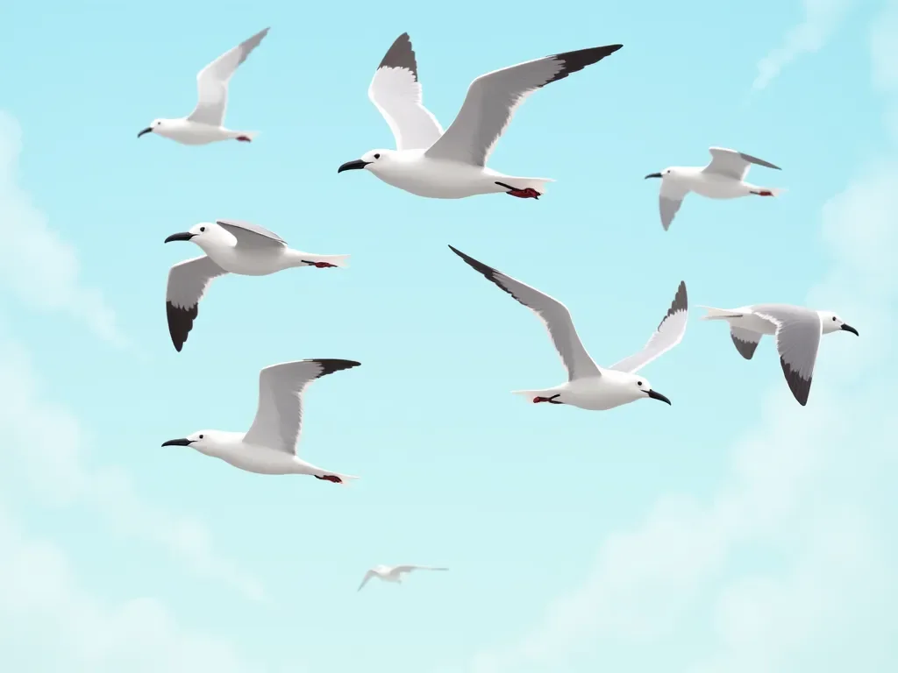

갈매기들이 머리 위를 맴돌며 날아다녔고, 그들의 울음소리는 아래에 있는 난파된 영혼들을 조롱하는 합창과도 같았다. 쪼개진 널빤지와 빈 기름통으로 급조된 뗏목은 마치 신의 와인잔 속 코르크마개처럼 둥둥 떠다녔다. 다섯 명의 인물이 이 떠다니는 누더기 위에 웅크리고 있었고, 그들의 햇볕에 탄 피부는 갈매기의 털갈이를 흉측하게 모방하듯 벗겨지고 있었다.
[Seagulls circled overhead, their cries a mocking chorus to the shipwrecked souls below. The makeshift raft, cobbled together from splintered planks and empty oil drums, bobbed like a cork in God’s wine glass. Five figures huddled on this floating patchwork, their sunburnt skin peeling in grotesque imitation of the gulls’ molting feathers.]
한때 깔끔했던 제복이 이제는 누더기가 된 해리엇 블룸 선장은 지평선을 향해 눈을 찌푸렸다. 끝없는 푸른빛이 사방으로 펼쳐져 있었고, 그것은 마치 창살도 탈출구도 없는 수중 감옥 같았다. “젠장,” 그녀는 중얼거렸고, 그녀의 목소리는 갈라진 입술만큼이나 건조하고 갈라져 있었다. “엄마 말씀을 듣고 그냥 회계사나 될 걸 그랬어.”
[Captain Harriet Bloom, her once-crisp uniform now a tattered mess, squinted at the horizon. The endless blue stretched in every direction, a watery prison with no bars and no escape. “Fuck me sideways,” she muttered, her voice as dry and cracked as her lips. “I should’ve listened to my mother and become a bloody accountant.”]
그녀 옆에 있던 톰 첸 박사가 웃음을 터뜨렸는데, 그 소리는 그들 주변에 흩어져 있는 빈 물통만큼이나 공허했다. “그리고 난 이 ‘평생의 모험'에 서명하는 대신 치질이나 계속 치료했어야 했는데.” 한때 미세 수술을 할 만큼 안정적이었던 그의 손가락은 이제 그들의 초라한 피난처에 있는 느슨한 매듭을 고정하려고 하면서 떨리고 있었다.
[Beside her, Dr. Tom Chen chuckled, a sound as hollow as the empty water jugs scattered around them. “And I should’ve stuck to treating hemorrhoids instead of signing up for this 'adventure of a lifetime’.” His fingers, once steady enough to perform microsurgery, now trembled as he tried to secure a loose knot in their pitiful shelter.]
갈매기들이 더 낮게 날아들었고, 그들의 작은 눈은 누더기 같은 일행에게 고정되어 있었다. 특히 대담한 한 마리가 뗏목을 향해 급강하하여 미아 포스터의 머리를 스칠 뻔했다. 젊은 해양 생물학자는 몸을 숙였고, 한때 선명했던 그녀의 붉은 머리카락은 이제 소금에 절은 엉망진창이 되어 있었다. “예전엔 이 녀석들이 장엄하다고 생각했는데,” 그녀가 내뱉었다. “이제는 산탄총 하나와 표적 연습을 할 수 있다면 왼쪽 가슴이라도 내놓겠어.”
[The gulls swooped lower, their beady eyes fixed on the ragtag group. One particularly bold bird dive-bombed the raft, nearly clipping Mia Foster’s head. The young marine biologist ducked, her once-vibrant red hair now a stringy, salt-encrusted mess. “I used to think these bastards were majestic,” she spat. “Now I’d give my left tit for a shotgun and some target practice.”]
“포스터 양, 언어 좀 조심하시지,” 추첨에서 이 불운한 크루즈 여행권을 당첨받은 나이 든 문학 교수 사무엘 호손이 느릿느릿 말했다. “하지만 인정하건대, 당신의 다채로운 속어는 우리의 절박한 상황에 어떤… 활기를 더해주는군요.” 그는 덕트 테이프로 겨우 붙어있는 금이 간 안경을 고쳐 쓰며 무릎 위에 놓인 가죽 장정의 일기장을 찡그리며 바라보았다. “아마도 내 회고록에 이것을 포함시킬 수 있겠군요. ‘표류: 한 학자의 축축한 대하소설’이라고 말이죠.”
[“Language, Ms. Foster,” drawled Samuel Hawthorne, the aging literature professor who’d won this ill-fated cruise in a raffle. “Though I must admit, your colorful vernacular does add a certain… zest to our dire circumstances.” He adjusted his cracked glasses, held together by a strip of duct tape, and squinted at the leather-bound journal in his lap. “Perhaps I’ll include it in my memoirs. 'Adrift: A Scholar’s Soggy Saga’.”]
그들의 잡다한 일행 중 다섯 번째 멤버인 하비에르 라미레즈라는 이름의 땅딸막한 요리사가 코웃음을 쳤다. “우리가 무사히 돌아간다면 교수님, 제가 첫 번째 복사본을 사겠습니다.” 그는 점점 줄어드는 그들의 보급품을 뒤적이다가 표정이 어두워졌다. “회고록 얘기가 나와서 말인데, 우리는 곧 마지막 장을 쓰게 될지도 모르겠어요. 콩 통조림 하나와 물 반 병밖에 남지 않았거든요.”
[The fifth member of their motley crew, a stocky cook named Javier Ramirez, snorted. “If we ever make it back, prof, I’ll buy the first copy.” He rummaged through their dwindling supplies, his face falling. “Speaking of memoirs, we might be writing our epilogues soon. We’re down to our last can of beans and half a bottle of water.”]
블룸 선장의 얼굴이 굳어졌다. “우리는 이걸로 버텨야 해. 그럴 수밖에 없어.” 그녀는 위를 맴도는 갈매기들을 올려다보며 눈을 좁혔다. “그리고 최악의 상황이 온다면, 음… 갈매기를 잡는 방법을 아는 사람 있어?”
[Captain Bloom’s face hardened. “We’ll make it last. We have to.” She glanced up at the circling gulls, her eyes narrowing. “And if worse comes to worst, well… anyone know how to catch a seagull?”]
첸 박사가 눈썹을 치켜올렸다. “농담하는 거죠? 그것들은 아마 공중 화장실 변기 시트보다 더 많은 세균을 가지고 있을 거예요.”
[Dr. Chen raised an eyebrow. “You can’t be serious. Those things are probably more germ-ridden than a public toilet seat.”]
“거지는 선택의 여지가 없어요, 박사님,“ 하비에르가 어깨를 으쓱했다. "게다가, 제가 갈매기 검보를 정말 맛있게 만들 수 있어요. 죽여주는 맛이죠.” 그는 잠시 멈추고 자신의 말에 움찔했다. “말을 잘못 골랐네요. 미안해요.”
[“Beggars can’t be choosers, doc,” Javier shrugged. “Besides, I’ve got a mean recipe for gull gumbo. It’s to die for.” He paused, wincing at his own words. “Poor choice of phrase. My bad.”]
마치 위협을 이해한 것처럼 갈매기들의 울음소리가 더 크고 집요해졌다. 한 마리가 급강하해 사무엘의 너덜너덜한 스웨터에서 느슨한 실을 낚아챘다. 교수는 비명을 지르며 허공을 휘둘렀다. “저 망할 하늘의 쥐새끼들! 저들의 고문에서 벗어날 수는 없는 건가?”
[As if understanding the threat, the gulls’ cries grew louder, more insistent. One swooped down, snatching a loose thread from Samuel’s tattered sweater. The professor yelped, swatting at the air. “Blasted sky rats! Is there no respite from their torment?”]
미아는 그들의 상황에도 불구하고 과학적 호기심이 발동해 새들의 패턴을 관찰했다. “있잖아, 정말 흥미로워. 저들이 그냥 무작정 맴도는 게 아니야. 저들의 비행에는 목적이 있어.” 그녀는 지평선의 한 지점을 가리켰다. “봐, 저들이 저쪽 방향으로 더 많이 모이고 있잖아? 그쪽에 육지가 있을지도 몰라.”
[Mia, her scientific curiosity piqued despite their situation, watched the birds’ patterns. “You know, it’s fascinating. They’re not just randomly circling. There’s a purpose to their flight.” She pointed to a spot on the horizon. “See how they’re congregating more heavily in that direction? There might be land that way.”]
블룸 선장은 눈을 가늘게 뜨며 며칠 만에 처음으로 희망의 빛을 보였다. “아니면 적어도 떠 있는 뭔가가 있을 거야. 어쩌면 다른 배일 수도 있고.” 그녀는 허리에 찬 물에 젖은 조명탄 발사기를 더듬었다. “한번 시도해 볼까? 우리에겐 조명탄이 두 발밖에 남지 않았어.”
[Captain Bloom squinted, hope flickering in her eyes for the first time in days. “Or at least something floating. Maybe another ship.” She fumbled for the waterlogged flare gun at her hip. “Should we risk it? We’ve only got two flares left.”]
일행은 서로 눈빛을 교환했고, 그들 사이에 무언의 대화가 오갔다. 마침내 첸 박사가 입을 열었다. “우리가 잃을 게 뭐가 있겠어? 구조될 마지막 기회와 우리의 존엄성, 그리고 아마도 우리의 목숨 말고는?”
[The group exchanged glances, a silent conversation passing between them. Finally, Dr. Chen spoke up. “What have we got to lose? Other than our last shot at rescue, our dignity, and possibly our lives?”]
“그렇죠, 박사님,” 하비에르가 그의 등을 토닥이며 씩 웃었다. “항상 밝은 면만 보시네요.”
[“That’s the spirit, doc,” Javier grinned, clapping him on the back. “Always looking on the bright side.”]
블룸 선장은 고개를 끄덕이고 조명탄 발사기를 들어올렸다. 붉은 불빛이 하늘을 가로질러 그어졌고, 끝없는 푸른빛과 대조되는 짧고 강렬한 광경이었다. 잠시 동안 갈매기들은 흩어졌고, 그들의 울음소리는 조명탄의 쉭쉭거리는 소리에 묻혔다.
[With a nod, Captain Bloom raised the flare gun. The red streak arced across the sky, a brief, brilliant contrast to the endless blue. For a moment, the gulls scattered, their cries drowned out by the hiss of the flare.]
불빛이 사라지자 일행은 숨을 죽였다. 몇 분이 지나갔지만 마치 몇 시간처럼 느껴졌다. 희망이 사라지기 시작할 무렵, 멀리서 뱃고동 소리가 들렸다. 지평선에 작은 점이 나타났고, 순식간에 그 크기가 커져갔다.
[As the light faded, the group held their breath. Minutes ticked by, feeling like hours. Just as hope began to fade, a distant horn sounded. A speck appeared on the horizon, growing larger by the second.]
“이런, 맙소사,” 사무엘이 고개를 저으며 웃었다. “우리가 저주하던 바로 그 생물들에 의해 구조되다니. 여기에 시 한 편이 있을 것 같군요.”
[Well, I’ll be damned,“ Samuel chuckled, shaking his head. "Saved by the very creatures we were cursing. Perhaps there’s a poem in that.”]
미아는 안도의 눈물로 반짝이는 눈으로 활짝 웃었다. “시를 쓰신다면, 우리가 그들을 거의 먹을 뻔했다는 것도 꼭 언급해 주세요. 멋진 아이러니한 반전이 될 거예요.”
[Mia grinned, her eyes bright with tears of relief. “If you write it, make sure to mention how we almost ate them. It’ll add a nice ironic twist.”]
구조선이 가까워질수록 갈매기들의 울음소리가 변하는 것 같았다. 더 이상 조롱하는 것이 아니라 승리의 함성 같았다. 블룸 선장은 작은 미소를 지었다. “있잖아,” 그녀가 생각에 잠겨 말했다. “어쩌면 바다는 우리를 꿈꾸지 않을지도 몰라. 하지만 아직 우리와 완전히 끝내지는 않은 것 같아.”
[As the rescue ship drew closer, the gulls’ cries seemed to change, no longer mocking but triumphant. Captain Bloom allowed herself a small smile. “You know,” she mused, “maybe the sea doesn’t dream of us. But it seems it’s not quite done with us yet.”]
일행은 더 가까이 모여 그들의 구원이 다가오는 것을 지켜보았다. 그리고 머리 위로, 갈매기들은 계속해서 맴돌았다. 광활하고 무심한 바다에 도전하는 이들의 변덕스러운 운명을 영원히 목격하는 증인들처럼.
[The group huddled closer, watching their salvation approach. And overhead, the seagulls circled on, eternal witnesses to the fickle fortunes of those who dared to challenge the vast, indifferent sea.]